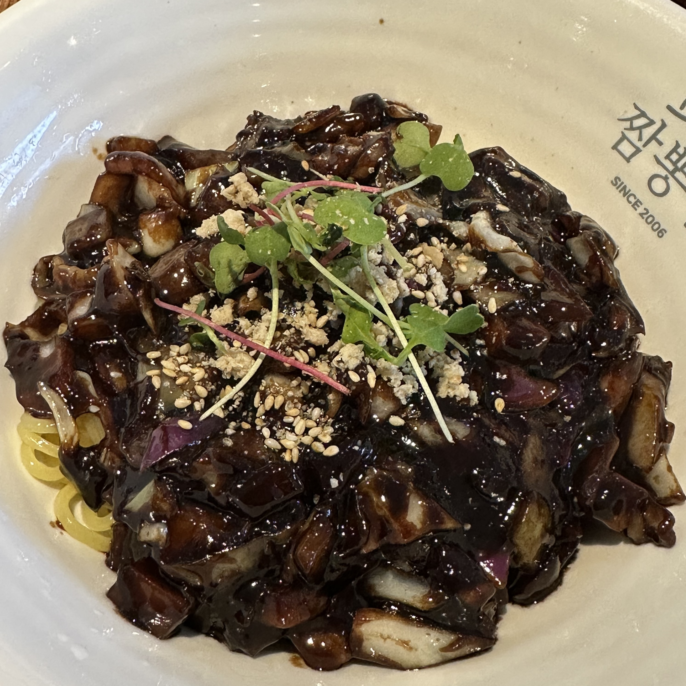
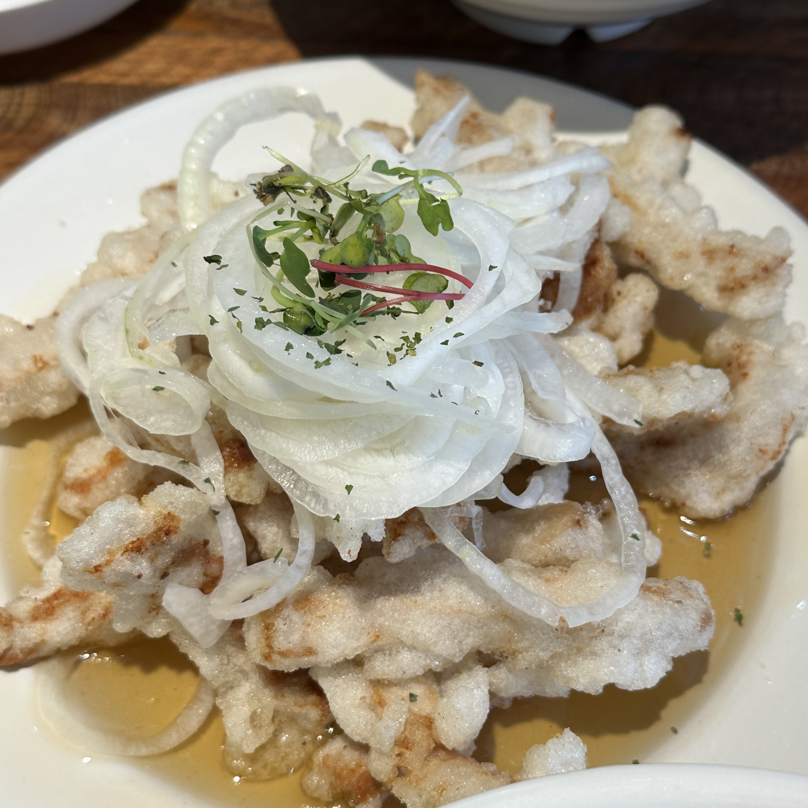

jjambbong-in 짬뽕인경기 고양시 일산서구 일산로803번길 82-13open 11:00break 15:30 - 17:00close 21:00
naver place제 인생 중국음식점 중 한 곳입니다. 언젠가는 어머니와 함께 오픈런까지 뛴 적도 있어요. 짬뽕인의 짜장면과 탕수육을 먹기 전에는 중국음식이 다 거기서 거기라고 생각했는데, 이곳의 음식은 정말 맛있습니다. 짜장면의 면에는 짜장 소스가 잘 스며들어 간이 적당하고, 탕수육 위로 수북하게 올려 주는 양파 슬라이스가 매우 잘 어울려요. 얇게 썬 양파와 함께라면 탕수육도 전혀 느끼하지 않습니다.

